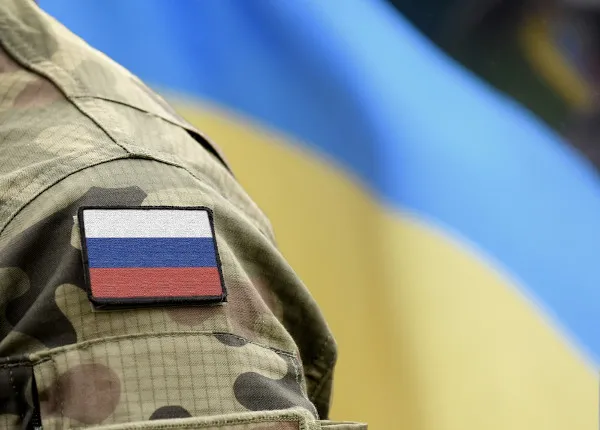
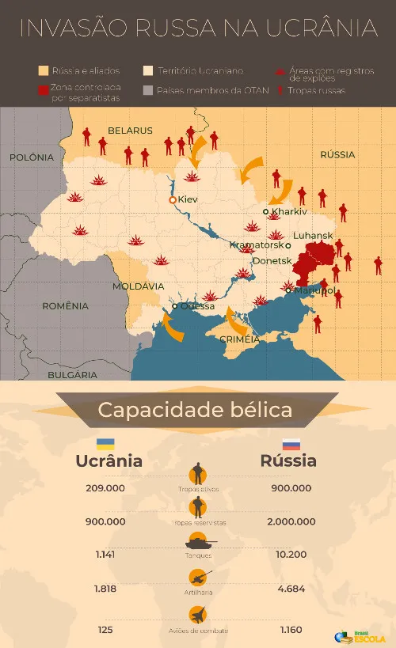
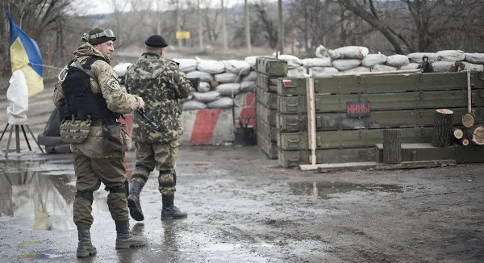

Em 03/02/2022 10h30 , atualizado em 25/02/2022 17h41
Tensão entre Rússia e Ucrânia
A anexação da Crimeia pela Rússia em 2014 fez ressurgir conflitos territoriais com a Ucrânia. Em 2021, a ameaça de invasão ao território ucraniano aumentou a tensão na região.
Por Eduardo Damasceno

As tensões entre Rússia e Ucrânia escalaram em 2021, mas tiveram início ainda no ano de 2014 com a anexação da Crimeia pela Rússia.
Nas primeiras horas do dia 24 de fevereiro de 2022, por volta das 23h do dia 23 no Brasil, o presidente da Rússia, Vladimir Putin, anunciou em rede nacional de TV uma operação militar na região do Donbass, no leste da Ucrânia. O ato foi visto como uma declaração de guerra.
Apesar de a Rússia ter confirmado apenas ações militares no Donbass, onde recentemente reconheceu os governos das repúblicas separatistas de Donetsk e Luhansk, foram registrados ataques a bases militares ucranianas em outras regiões.
A tensão entre a Rússia e a Ucrânia aumentou após milhares de soldados russos serem posicionados nas fronteiras com o território ucraniano, o que despertou o alerta para uma invasão russa na Ucrânia.
Essa movimentação atípica começou em novembro de 2021 e se intensificou em janeiro de 2022, mas a origem do conflito é mais antiga.
As raízes do conflito estão na crise política que se instalou na Ucrânia no ano de 2014 e na anexação da Crimeia pela Rússia nesse mesmo período. Além disso, os russos tentam impedir uma maior aproximação da Ucrânia com a Otan, sendo essa uma das exigências impostas por parte da Rússia em meio às negociações.
Contexto da tensão atual entre Rússia e Ucrânia
A atual escalada de tensão entre a Rússia e a Ucrânia iniciou-se a partir do final de 2021, quando a Rússia deslocou mais de 100 mil soldados e um conjunto de aparatos militares, como veículos blindados e armamentos, para a sua fronteira com o país do Leste Europeu, o que foi interpretado como uma ameaça de invasão ao território ucraniano.
No dia 26 de janeiro de 2022, o governo russo divulgou imagens de uma parte do seu grupo militar em treinamento em Rostov, próximo da divisa setentrional com a Ucrânia. O território ucraniano possui quase dois mil km de fronteiras terrestres com a Rússia, situada ao norte, leste e sudeste.
Não obstante as negativas do governo russo sobre uma eminente invasão e guerra contra a Ucrânia, esse movimento por parte da Rússia provocou a reação dos líderes ucranianos e despertou o alerta em todo o mundo, especialmente nos Estados Unidos e nos demais membros da Otan e da União Europeia. O secretário-geral da Otan, no entanto, negou que a organização auxiliará militarmente a Ucrânia em caso de um ataque promovido pela Rússia,|1| embora tenha reforçado a segurança em seus países-membros do Leste Europeu.|2|
As tensões geopolíticas entre a Rússia e a Ucrânia, no entanto, não surgiram recentemente. Na verdade, o atual problema já se estende por quase oito anos, e tem suas raízes em 2014, ano em que a Rússia anexou o território da Crimeia.
A Crimeia é uma península ucraniana que havia sido incorporada ao país em 1954, quando ainda fazia parte da União Soviética. Localiza-se no mar Negro, a sudeste da parcela continental do território ucraniano. Essa região apresenta uma profunda conexão étnico cultural com a Rússia, considerando que o russo é um dos principais idiomas falados na Crimeia e uma grande parcela de sua população é de origem russa.
A anexação da Crimeia ocorreu depois da deposição do presidente ucraniano pró-Rússia Viktor Yanukovich, seguindo a crise política que se instaurou no país a partir do final de 2013. Outros motivos associados aos avanços da Rússia na fronteira ucraniana são as negociações que estavam em curso entre a Ucrânia e a Organização do Tratado do Atlântico Norte (Otan), o que significaria uma maior presença ocidental, principalmente dos Estados Unidos, no Leste Europeu.
A crise de 2013/2014 deu origem a um intenso conflito no leste da Ucrânia, na região de Donbass, provocado pelo surgimento de grupos separatistas pró-Rússia, que constituíram duas repúblicas independentes não reconhecidas nem pelo governo ucraniano nem pela comunidade internacional, que são as Repúblicas Populares de Donetsk e Lugansk. Ambas têm, entretanto, o apoio de Moscou.
Nota-se, além disso, que a Ucrânia, os Estados Unidos e outros membros da Otan executaram exercícios militares no mar Negro em meados de 2021, próximo de onde se localiza a Crimeia, o que elevou a desconfiança da Rússia.

Agravamento da crise política da Ucrânia
A crise política no país teve início no mês de novembro de 2013, quando houve a suspensão (ou adiamento) das negociações que estavam em curso entre a União Europeia e a Ucrânia. A falta de um acordo levou centenas de milhares de ucranianos às ruas para protestarem contra a decisão, demonstrando ainda a sua insatisfação frente ao governo do então presidente Viktor Yanukovich, alinhado com a política russa e um dos protagonistas da Revolução Laranja de 2004, ocasionada pelas denúncias de fraude nas eleições presidenciais disputadas e vencidas por Yanukovich naquele mesmo ano. Seu opositor era Viktor Yushchenko.
Uma das exigências dos manifestantes era a retomada das negociações de Kiev com a União Europeia, o que foi negado por Yanukovich. Diante disso, foi exigida do presidente a sua renúncia ao cargo. A reação do governo ucraniano aos protestos deixou mortos e feridos entre janeiro e fevereiro de 2014, fato que suscitou a escalada dos conflitos e a ocupação, por parte dos manifestantes, de prédios oficiais do governo. Em 22 de fevereiro daquele mesmo ano, Yanukovich foi destituído pelo Parlamento ucraniano.
Todos esses eventos, em especial o afastamento do presidente alinhado com a Rússia, promoveram o agravamento da crise política na Ucrânia, gerando um conflito no leste do país denominado Guerra de Donbass ou Guerra da Ucrânia, caracterizado pelo enfrentamento de grupos separatistas pró-Rússia e o exército ucraniano. A guerra resultou em milhares de pessoas refugiadas e aproximadamente 14 mil mortes, além da destruição de cidades, muitas transformadas em campos de batalha, e lavouras agrícolas. Kiev recebeu o apoio direto dos Estados Unidos, da Otan e da União Europeia, enquanto a Rússia se aproximou de Belarus.
Instaurou-se no período um conflito inicialmente de caráter diplomático com o país vizinho, mas que tomou um novo contorno com o apoio demonstrado pelos russos aos grupos separatistas do leste ucraniano e com a posterior anexação da Crimeia. Em 2015, Ucrânia, Rússia, Alemanha e França assinaram os Acordos de Minsk, que demandavam o cessar-fogo e a retirada de armamentos pesados no leste do território ucraniano, mas, ainda assim, os conflitos não chegaram ao fim como se esperava.

Soldados nas áreas ocupadas pelos militares russos e separatistas pró-Rússia na região leste da Ucrânia.[1]
Importância da Ucrânia para a Rússia
Antes de se tornar uma nação independente, no ano de 1991, após a dissolução da União Soviética, o território da Ucrânia fez parte da Rússia. Para além disso, ambos os países têm a mesma origem histórica. A importância da Ucrânia para a Rússia abrange ainda questões estratégicas para a manutenção de sua soberania externa e também econômicas.
Muitos especialistas de política internacional analisam que a Ucrânia, pela relação histórica que tem com a Rússia e, sobretudo, pela sua posição geográfica, representa uma espécie de barreira entre as influências do Ocidente, mais precisamente de organizações internacionais como a Otan, e o território russo.|3| Assim, a Rússia se manteria como uma das principais nações influentes na região do Leste Europeu. É justamente por isso que um acordo entre a Ucrânia e a União Europeia, além da cooperação com a Otan, seria potencialmente prejudicial para a Rússia.
Em se tratando da localização do território ucraniano, ele já foi, no passado, uma barreira para o avanço de tropas militares sobre a Rússia, representando assim uma “zona de segurança” para o país.|4|
A importância econômica da Ucrânia está diretamente ligada à exportação de gás natural da Rússia para a Europa, pois os gasodutos utilizados pelo país atravessam o território ucraniano, o que, em contrapartida, gera uma receita de quase dois bilhões de dólares por ano para a Ucrânia.|5|
Por que os EUA são contra a invasão?
Os Estados Unidos, desde o início da escalada de tensões entre a Rússia e a Ucrânia, posicionaram-se contrários às ofensivas russas e demonstraram apoio diplomático ao governo ucraniano. O país, em conjunto com a Otan, recusou a exigência russa de impedir a entrada da Ucrânia na organização e ainda ameaça a imposição de severas sanções econômicas a Moscou caso a situação termine em um impasse. O atual presidente norte-americano Joe Biden fala até mesmo em sanções pessoais contra Vladimir Putin, presidente russo.|6|
A forma como foi efetivada a retirada das tropas norte-americanas no Afeganistão, junto do fracasso da ocupação no país do Oriente Médio, bem como a conjuntura interna fragilizada dos Estados Unidos no atual momento|7| representam dificuldades para que o país apoie uma possível invasão na Ucrânia, que resultaria em um conflito de maior escala na Europa. Além disso, a posição da China diante do conflito e uma maior aproximação com a Rússia imporiam desafios ainda maiores aos Estados Unidos na manutenção de sua hegemonia internacional.
Reflexos da tensão para o mundo
O conflito entre Rússia e Ucrânia impõe reflexos não somente na Europa, que vive um momento de muita tensão com a ameaça à segurança interna no continente, mas em todo o mundo, inclusive no Brasil. De imediato, a tensão entre essas nações suscita um impasse diplomático para os demais países, especialmente para aqueles que mantêm relações com ambos.
O cenário econômico internacional também é afetado, uma vez que a Ucrânia e a Rússia são grandes produtores e exportadores de cereais e grãos, especialmente para a Europa. O território russo é ainda o terceiro maior produtor mundial de petróleo e gás natural, atrás somente dos Estados Unidos e da Arábia Saudita, tendo assim papel fundamental no mercado dessas commodities, principalmente no que diz respeito aos preços do barril de petróleo.
As tensões entre a Rússia e a Ucrânia têm sido, desde o final de 2021, um tema muito importante e recorrente em todos os noticiários brasileiros e internacionais, e certamente algumas questões a esse respeito aparecerão nas provas de Ciências Humanas dos próximos vestibulares. Atente-se para os seguintes temas:
relações históricas entre a Rússia e a Ucrânia;
relações políticas e econômicas entre os Estados Unidos e os países do Leste Europeu;
crise política na Ucrânia;
anexação da Crimeia pela Rússia;
geopolítica do Leste Europeu;
importância econômica da Rússia e da Ucrânia para a Europa;
Organização do Tratado do Atlântico Norte (Otan);
União Europeia.
Notas
|1| DW. Otan não enviará tropas à Ucrânia em caso de ataque russo. DW, 30 jan. 2022. Disponível aqui.
|2| DW. Otan reforça presença militar no Leste Europeu. DW, 24 jan. 2022. Disponível aqui.
|3| MACIEL, Camila. Entenda o conflito entre Rússia e Ucrânia e como ele afeta o Brasil. Agência Brasil, 29 jan. 2022. Disponível aqui.
|3| BARINI, Filipe. Entenda em oito perguntas a crise na Ucrânia e o risco de guerra. O Globo, 01 fev. 2022. Disponível aqui.
|4| BERMÚDEZ, Ángel. 3 fatores que explicam por que a Ucrânia é tão importante para a Rússia. BBC News Mundo, 31 jan. 2022. Disponível aqui.
|5| GIEGLOW, Igor. Entenda a crise entre a Rússia de Putin, a Ucrânia e as forças da Otan. Folha de S.Paulo, 25 jan. 2022. Disponível aqui.